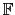

suivant: Le calcul modulaire comme
monter: Le calcul modulaire dans
précédent: Construction d'un corps de
Table des matières
Index
Factorisation d'un polynôme à coefficients dans un corps de Galois : factor
On peut factoriser un polynôme à coefficients dans un corps de Galois avec
factor.
On tape par exemple pour avoir G=
4 :
G:=GF(2,2,['w','G'])
On obtient :
GF(2,w^2+w+1,[w,G],undef)
On tape par exemple :
a:=G(w)
factor(a^2*x^2+1))
On obtient :
(G(w+1))*(x+G(w+1))^2
Documentation de giac écrite par Renée De Graeve